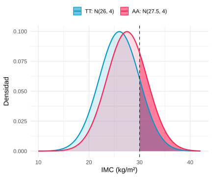
¿Por qué necesitamos modelos de distribución?
Modelos para fenotipos, genotipos, conteos, proporciones y estadísticos
¿Por qué necesitamos modelos de distribución?
En Nutrigenómica estudiamos cómo interaccionan los nutrientes con el genoma, el epigenoma, el transcriptoma y la microbiota. Las variables que medimos son muy distintas y cada una pide un modelo de probabilidad diferente.
| Tipo de dato | Ejemplos | Modelo habitual |
|---|---|---|
| Continuo simétrico | IMC, presión arterial, colesterol LDL | Normal |
| Continuo positivo asimétrico | Insulina, PCR, triglicéridos, vitamina D | Lognormal, Gamma |
| Binario / categórico | Portador del alelo de riesgo, genotipo, respondedor | Binomial, Multinomial |
| Conteos | Lecturas de RNA-seq, conteos de taxones bacterianos | Poisson, Binomial negativa, inflados de ceros |
| Proporciones en \((0,1)\) | Metilación de un CpG, abundancia relativa | Beta |
| Composiciones | Perfil de filos de la microbiota | Dirichlet |
| p-valores bajo \(H_0\) | GWAS, estudios de expresión diferencial | Uniforme |
| Estadísticos | Medias, varianzas y cocientes de varianzas | \(t\), \(\chi^2\), \(F\) |
Importante
Elegir bien la distribución es el primer paso para estimar parámetros y contrastar hipótesis correctamente.
Distribuciones continuas
Definición 1 (Distribución Normal) Una variable aleatoria continua \(X\) sigue un modelo de distribución normal \(X\sim N(\mu, \sigma)\) si su función de densidad es
\[ f(x) = \frac{1}{\sigma\sqrt{2\pi}}e^{-\frac{(x-\mu)^2}{2\sigma^2}} \quad x\in\mathbb{R}, \]
donde \(\mu\) es la media y \(\sigma>0\) la desviación típica.
Estadísticos: \(E(X) = \mu\) y \(Var(X) = \sigma^2\).
Es simétrica, y el 68%, 95% y 99,7% de los valores están a menos de 1, 2 y 3 desviaciones típicas de la media.
Ejemplos en Nutrigenómica
Ejemplo 1 En adultos europeos el IMC de los homocigotos TT del gen FTO (rs9939609) sigue aproximadamente una distribución \(N(26, 4)\), mientras que el de los homocigotos AA (alelo de riesgo) sigue una \(N(27.5, 4)\). ¿Qué proporción de cada grupo tiene obesidad (IMC \(\geq 30\))?
\(P(X\geq 30)\) es el área a la derecha de 30:
Una diferencia de 1,5 puntos en la media aumenta la proporción de obesos en un 68%.

Ejemplo 2 El colesterol LDL en una población adulta sigue una distribución \(N(130, 30)\) mg/dl. Si una intervención nutricional reduce la media en 10 mg/dl sin cambiar la dispersión, ¿cuánto cambia la proporción de personas con LDL \(\geq 160\) mg/dl?
Un pequeño desplazamiento de la media reduce un 43% la proporción en la cola. Es el fundamento de las estrategias poblacionales de prevención.
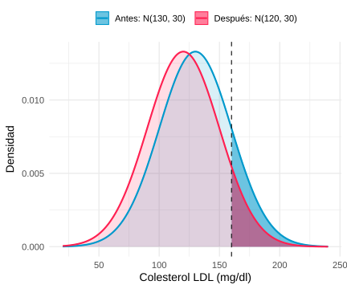
Definición 2 (Distribución Lognormal) Una variable aleatoria positiva \(X\) sigue un modelo lognormal \(X\sim LN(\mu, \sigma)\) si su logaritmo sigue una distribución normal, \(\log(X)\sim N(\mu, \sigma)\).
Estadísticos: \(E(X) = e^{\mu+\sigma^2/2}\) y \(Var(X) = (e^{\sigma^2}-1)e^{2\mu+\sigma^2}\). La mediana es \(e^{\mu}\) (media geométrica).
Aparece cuando la variable es el resultado de muchos efectos multiplicativos. Es asimétrica a la derecha y por eso se suele analizar en escala logarítmica.
Ejemplos en Nutrigenómica
Ejemplo 3 Los triglicéridos en ayunas siguen una distribución lognormal con mediana 110 mg/dl y \(\sigma = 0.45\) en escala logarítmica, es decir, \(LN(\log 110, 0.45)\). ¿Qué proporción supera 150 mg/dl (hipertrigliceridemia)?
\(P(X > 150) = P(\log X > \log 150) =\) 24.5%.
La media, 121.7 mg/dl, es mayor que la mediana por la asimetría.
Ayuda
En escala logarítmica la variable es normal y se interpretan cocientes de medias geométricas.
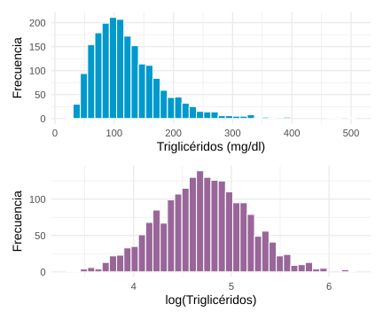
Definición 3 (Distribución Gamma) Una variable aleatoria positiva \(X\) sigue un modelo Gamma \(X\sim Gamma(\alpha, \beta)\) si su función de densidad es
\[ f(x) = \frac{\beta^\alpha}{\Gamma(\alpha)}x^{\alpha-1}e^{-\beta x}\quad x>0, \]
donde \(\alpha>0\) es el parámetro de forma y \(\beta>0\) el de tasa.
Estadísticos: \(E(X) = \dfrac{\alpha}{\beta}\) y \(Var(X) = \dfrac{\alpha}{\beta^2}\). El coeficiente de variación \(1/\sqrt{\alpha}\) es constante.
Ejemplos en Nutrigenómica
Ejemplo 4 La 25(OH)D en una población mediterránea en invierno sigue una distribución \(Gamma(6, 0.25)\) (ng/ml), con media 24 ng/ml. En los portadores de una variante del gen GC (proteína transportadora de la vitamina D) sigue una \(Gamma(6, 0.30)\), con media 20 ng/ml. ¿Qué proporción tiene deficiencia (< 20 ng/ml)?
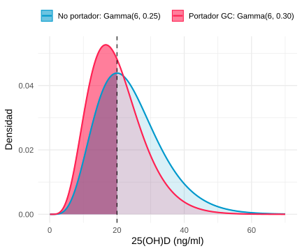
Definición 4 (Distribución Beta) Una variable aleatoria \(X\) en el intervalo \((0,1)\) sigue un modelo Beta \(X\sim Beta(\alpha, \beta)\) si su función de densidad es
\[ f(x) = \frac{\Gamma(\alpha+\beta)}{\Gamma(\alpha)\Gamma(\beta)}x^{\alpha-1}(1-x)^{\beta-1}\quad 0<x<1. \]
Estadísticos: \(E(X) = \dfrac{\alpha}{\alpha+\beta}\) y \(Var(X) = \dfrac{\alpha\beta}{(\alpha+\beta)^2(\alpha+\beta+1)}\).
Es muy flexible: puede ser simétrica, asimétrica, en forma de U o concentrada cerca de 0 o de 1.
Ejemplos en Nutrigenómica
Ejemplo 5 Se mide la metilación de un CpG del promotor del gen MTHFR en sujetos con ingesta baja y adecuada de folato. El valor \(\beta\) de metilación sigue una \(Beta(6, 4)\) con folato bajo y una \(Beta(3, 7)\) con folato adecuado.
Nota
En los análisis de metilación se usa también el valor M, \(M = \log_2\frac{\beta}{1-\beta}\), que es aproximadamente normal.
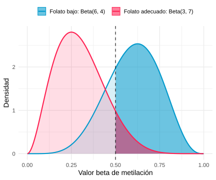
Definición 5 (Distribución de Dirichlet) Un vector aleatorio \((X_1,\ldots,X_k)\) con \(X_i>0\) y \(\sum_{i=1}^k X_i = 1\) sigue un modelo de Dirichlet \(Dir(\alpha_1,\ldots,\alpha_k)\) si su función de densidad es
\[ f(x_1,\ldots,x_k) = \frac{\Gamma(\alpha_0)}{\prod_{i=1}^k\Gamma(\alpha_i)}\prod_{i=1}^k x_i^{\alpha_i-1}, \quad \alpha_0=\sum_{i=1}^k \alpha_i. \]
Estadísticos: \(E(X_i) = \dfrac{\alpha_i}{\alpha_0}\) y \(Var(X_i) = \dfrac{\alpha_i(\alpha_0-\alpha_i)}{\alpha_0^2(\alpha_0+1)}\). Cada componente marginal es \(Beta(\alpha_i, \alpha_0-\alpha_i)\).
Es la generalización multivariante de la Beta y el modelo natural para datos composicionales, cuyas partes suman 1.
Ejemplos en Nutrigenómica
Ejemplo 6 La composición de la microbiota fecal por filos (Firmicutes, Bacteroidetes, Actinobacteria, Proteobacteria y Otros) sigue una \(Dir(40, 30, 8, 5, 7)\), con \(\alpha_0 = 90\). A la izquierda, la densidad marginal de cada filo, \(Beta(\alpha_i, 90-\alpha_i)\); a la derecha, la composición de 12 voluntarios simulados.
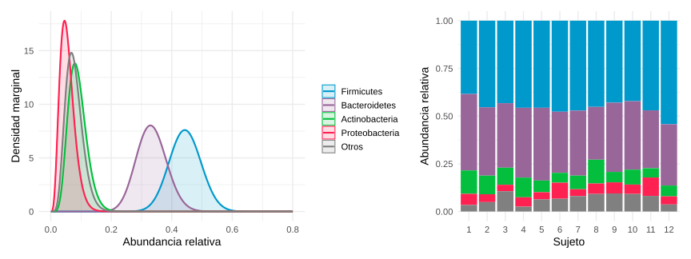
Las medias son Firmicutes 0.44, Bacteroidetes 0.33, Actinobacteria 0.09, Proteobacteria 0.06, Otros 0.08.
Distribuciones discretas
Definición 6 (Distribución Binomial) Una variable aleatoria discreta \(X\) sigue un modelo binomial \(X\sim B(n, p)\) si cuenta el número de éxitos en \(n\) ensayos independientes con probabilidad de éxito \(p\). Su función de probabilidad es
\[ P(X=k) = \binom{n}{k}p^k(1-p)^{n-k}\quad k=0,1,\ldots,n. \]
Estadísticos: \(E(X) = np\) y \(Var(X) = np(1-p)\).
Ejemplos en Nutrigenómica
Ejemplo 7 La frecuencia del genotipo TT de MTHFR C677T en población española es aproximadamente del 16%. Si genotipamos a 50 personas, el número de homocigotos TT sigue una \(B(50, 0.16)\). ¿Cuál es la probabilidad de encontrar al menos 12?
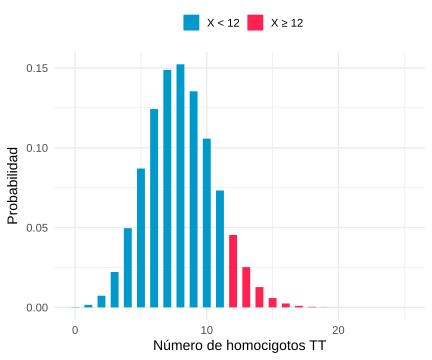
Definición 7 (Distribución Multinomial) Si cada uno de \(n\) ensayos independientes puede dar \(k\) resultados con probabilidades \(p_1,\ldots,p_k\), el vector \((X_1,\ldots,X_k)\) con el número de veces que se obtiene cada resultado sigue un modelo multinomial \(M(n; p_1,\ldots,p_k)\):
\[ P(X_1=x_1,\ldots,X_k=x_k) = \frac{n!}{x_1!\cdots x_k!}p_1^{x_1}\cdots p_k^{x_k}, \quad \sum x_i = n. \]
Estadísticos: \(E(X_i) = np_i\), \(Var(X_i) = np_i(1-p_i)\) y \(Cov(X_i, X_j) = -np_ip_j\).
Ejemplos en Nutrigenómica
Si en un locus bialélico con alelos A y T las frecuencias alélicas son \(p\) y \(q=1-p\), en una población en equilibrio de Hardy-Weinberg los genotipos siguen una distribución multinomial con probabilidades \[ P(AA) = p^2,\quad P(AT) = 2pq,\quad P(TT) = q^2. \]
Ejemplo 8 La frecuencia del alelo de riesgo A del SNP rs9939609 de FTO en europeos es \(p\approx 0.42\). En una muestra de 500 personas en equilibrio, los genotipos siguen una \(M(500;\ 0.42^2,\ 2\cdot 0.42\cdot 0.58,\ 0.58^2)\).
| Genotipo | Probabilidad | Número esperado |
|---|---|---|
| AA | 0.1764 | 88.2 |
| AT | 0.4872 | 243.6 |
| TT | 0.3364 | 168.2 |
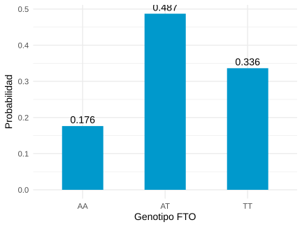
La desviación del equilibrio puede deberse a errores de genotipado, estratificación o selección. Se comprueba con un contraste \(\chi^2\) que veremos más adelante.
Definición 8 (Distribución de Poisson) Una variable aleatoria discreta \(X\) sigue un modelo de Poisson \(X\sim P(\lambda)\) si cuenta el número de sucesos que ocurren en un intervalo de tiempo o espacio, de manera independiente y a ritmo constante \(\lambda\):
\[ P(X=k) = \frac{e^{-\lambda}\lambda^k}{k!}\quad k=0,1,2,\ldots \]
Estadísticos: \(E(X) = Var(X) = \lambda\) (equidispersión).
Ejemplos en Nutrigenómica
Ejemplo 9 En réplicas técnicas de RNA-seq el número de lecturas de un gen con expresión media de 8 lecturas sigue una distribución \(P(8)\). ¿Cuál es la probabilidad de no observar ninguna lectura? ¿Y de observar más de 15?
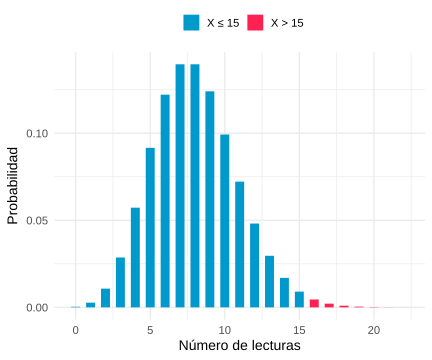
Definición 9 (Distribución Binomial Negativa) Una variable aleatoria discreta \(X\) sigue un modelo binomial negativo \(X\sim BN(\mu, \phi)\) con media \(\mu\) y parámetro de dispersión \(\phi\) si su función de probabilidad es
\[ P(X=k) = \frac{\Gamma(k+1/\phi)}{k!\,\Gamma(1/\phi)}\left(\frac{1}{1+\phi\mu}\right)^{1/\phi}\left(\frac{\phi\mu}{1+\phi\mu}\right)^k\quad k=0,1,2,\ldots \]
Estadísticos: \(E(X) = \mu\) y \(Var(X) = \mu + \phi\mu^2\) (sobredispersión).
Se obtiene como una mezcla de Poisson cuya tasa \(\lambda\) varía entre individuos según una Gamma. Por eso es el modelo de referencia para conteos con variabilidad biológica entre réplicas.
Ejemplos en Nutrigenómica
Ejemplo 10 Entre réplicas biológicas, un gen con expresión media de 100 lecturas tiene dispersión \(\phi = 0.2\), es decir, sigue una \(BN(100, 0.2)\). Comparémosla con la \(P(100)\) de la misma media.
Advertencia
Un modelo de Poisson con datos sobredispersos subestima la varianza y da muchos falsos positivos en expresión diferencial.
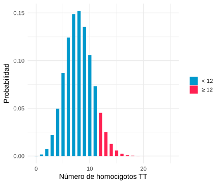
Definición 10 (Modelo inflado de ceros) Una variable de conteo \(X\) sigue un modelo inflado de ceros si es una mezcla de un cero estructural, con probabilidad \(\pi\), y una distribución de conteo \(g\) (Poisson o binomial negativa), con probabilidad \(1-\pi\):
\[ P(X=0) = \pi + (1-\pi)g(0), \qquad P(X=k) = (1-\pi)g(k)\quad k\geq 1. \]
Estadísticos (ZIP): \(E(X) = (1-\pi)\lambda\) y \(Var(X) = (1-\pi)\lambda(1+\pi\lambda)\).
Ejemplos en Nutrigenómica
Ejemplo 11 El 40% de los participantes no tiene Akkermansia en su microbiota (ceros estructurales) y, en los que la tienen, el conteo sigue una \(BN(20, 0.5)\). El conteo sigue una binomial negativa inflada de ceros con \(\pi = 0.4\).
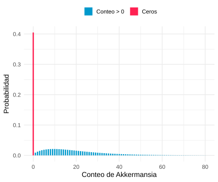
| Distribución | Parámetros | Media | Varianza | Ejemplos en Nutrigenómica |
|---|---|---|---|---|
| Normal(\(\mu, \sigma\)) | \(\mu\in\mathbb{R},\ \sigma>0\) | \(\mu\) | \(\sigma^2\) | IMC, presión arterial, colesterol, PRS. |
| Lognormal(\(\mu, \sigma\)) | \(\mu\in\mathbb{R},\ \sigma>0\) | \(e^{\mu+\sigma^2/2}\) | \((e^{\sigma^2}-1)e^{2\mu+\sigma^2}\) | Insulina, HOMA-IR, PCR, triglicéridos. |
| Gamma(\(\alpha, \beta\)) | \(\alpha, \beta>0\) | \(\dfrac{\alpha}{\beta}\) | \(\dfrac{\alpha}{\beta^2}\) | Vitamina D, ingestas episódicas. |
| Beta(\(\alpha, \beta\)) | \(\alpha, \beta>0\) | \(\dfrac{\alpha}{\alpha+\beta}\) | \(\dfrac{\alpha\beta}{(\alpha+\beta)^2(\alpha+\beta+1)}\) | Metilación de CpG, abundancias relativas. |
| Dirichlet(\(\alpha_1,\ldots,\alpha_k\)) | \(\alpha_i>0\) | \(\dfrac{\alpha_i}{\alpha_0}\) | \(\dfrac{\alpha_i(\alpha_0-\alpha_i)}{\alpha_0^2(\alpha_0+1)}\) | Composición de la microbiota, reparto de macronutrientes. |
| Binomial(\(n, p\)) | \(n\in\mathbb{N},\ p\in(0,1)\) | \(np\) | \(np(1-p)\) | Alelos de riesgo, portadores, respondedores. |
| Multinomial(\(n; p_1,\ldots,p_k\)) | \(\sum p_i = 1\) | \(np_i\) | \(np_i(1-p_i)\) | Genotipos, Hardy-Weinberg, categorías de adherencia. |
| Poisson(\(\lambda\)) | \(\lambda>0\) | \(\lambda\) | \(\lambda\) | Réplicas técnicas de RNA-seq, incidencia. |
| Binomial negativa(\(\mu, \phi\)) | \(\mu, \phi>0\) | \(\mu\) | \(\mu+\phi\mu^2\) | Réplicas biológicas de RNA-seq, taxones de la microbiota. |
| Inflada de ceros (\(\pi\), \(g\)) | \(\pi\in(0,1)\) | \((1-\pi)E_g(X)\) | — | Taxones raros, scRNA-seq, consumo de alcohol. |
Distribuciones de p-valores y de estadísticos
Teorema 1 (Distribución de los p-valores bajo \(H_0\)) Si la hipótesis nula es cierta y el estadístico del contraste es continuo, el p-valor sigue una distribución uniforme \(U(0,1)\), con densidad \(f(x) = 1\) para \(0<x<1\): \[ P(\text{p-valor} \leq \alpha \mid H_0) = \alpha. \]
Consecuencia: si hacemos \(m\) contrastes independientes con \(H_0\) cierta, esperamos \(m\alpha\) falsos positivos. En un GWAS con \(10^6\) SNPs y \(\alpha = 0.05\) ¡son 50 000 falsos positivos!
Ejemplos en Nutrigenómica
Por eso se usan correcciones por comparaciones múltiples: Bonferroni (\(\alpha/m\), umbral GWAS \(5\cdot 10^{-8}\)) o la tasa de falsos descubrimientos (FDR) de Benjamini-Hochberg.
Ejemplo 12 Simulamos un estudio de expresión diferencial con 10 000 genes, de los que 500 cambian realmente con la dieta. Los p-valores de los 9500 genes nulos siguen una \(U(0,1)\) (línea roja); los de los genes con efecto se acumulan cerca de 0.
| Criterio | Genes significativos |
|---|---|
| p < 0.05 sin corregir | 741 |
| De ellos, falsos positivos | 469 |
| FDR (Benjamini-Hochberg) < 0.05 | 6 |
| Bonferroni < 0.05 | 2 |
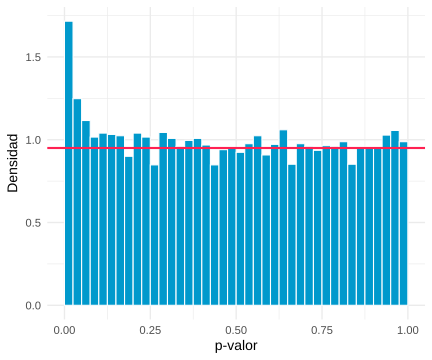
Definición 11 (Distribución Chi-cuadrado) Si \(Z_1,\ldots,Z_\nu\) son variables independientes \(N(0,1)\), la variable \[ \chi^2 = Z_1^2 + \cdots + Z_\nu^2 \] sigue una distribución chi-cuadrado con \(\nu\) grados de libertad, \(\chi^2(\nu)\).
Estadísticos: \(E(\chi^2) = \nu\) y \(Var(\chi^2) = 2\nu\).
Usos en Nutrigenómica
Definición 12 (Distribución T de Student) Si \(Z\sim N(0,1)\) y \(U\sim\chi^2(\nu)\) son independientes, la variable \[ T = \frac{Z}{\sqrt{U/\nu}} \] sigue una distribución T de Student con \(\nu\) grados de libertad, \(T(\nu)\).
Estadísticos: \(E(T) = 0\) (\(\nu>1\)) y \(Var(T) = \dfrac{\nu}{\nu-2}\) (\(\nu>2\)).
Es simétrica como la normal pero con colas más pesadas. Cuando \(\nu\to\infty\) se aproxima a la \(N(0,1)\).
Usos en Nutrigenómica
Definición 13 (Distribución F de Fisher-Snedecor) Si \(U\sim\chi^2(\nu_1)\) y \(V\sim\chi^2(\nu_2)\) son independientes, la variable \[ F = \frac{U/\nu_1}{V/\nu_2} \] sigue una distribución F de Fisher-Snedecor con \(\nu_1\) y \(\nu_2\) grados de libertad, \(F(\nu_1, \nu_2)\).
Estadísticos: \(E(F) = \dfrac{\nu_2}{\nu_2-2}\) (\(\nu_2>2\)).
Usos en Nutrigenómica
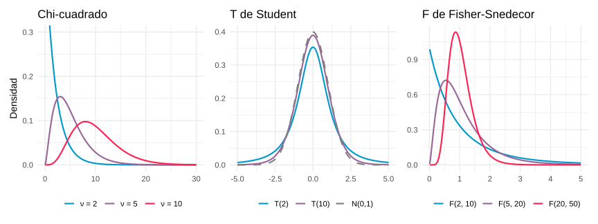
Ejercicio 1 ¿Qué distribución de probabilidad utilizarías para modelar las siguientes variables?